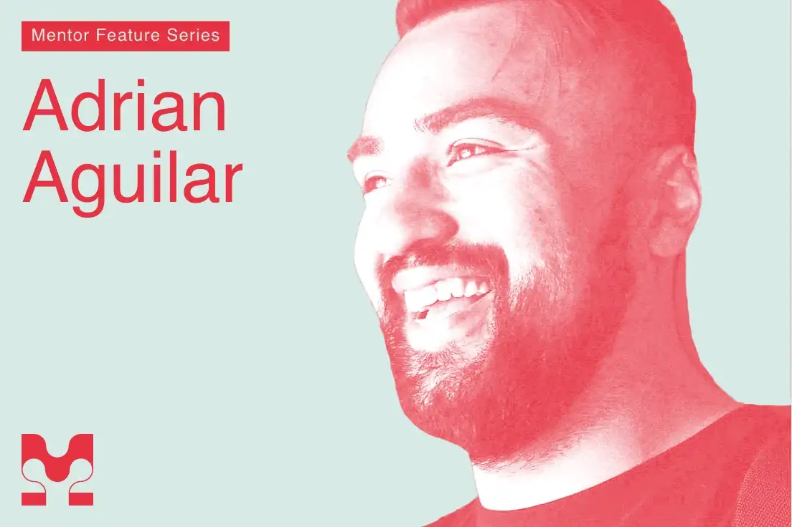
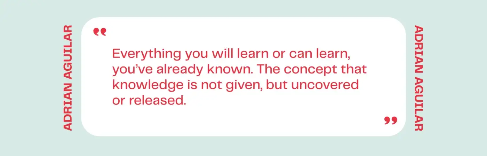
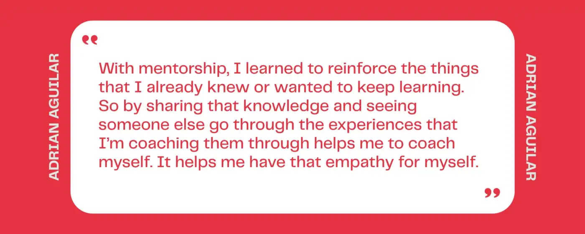

AIGA Mentor Spotlight
Overview
AIGA Chicago’s Mentor Feature Series spotlighted my approach to mentorship — how sharing what I already know reinforces my own growth, and why I believe knowledge isn’t handed down so much as uncovered.
Preview

Read on MediumIn His Words

